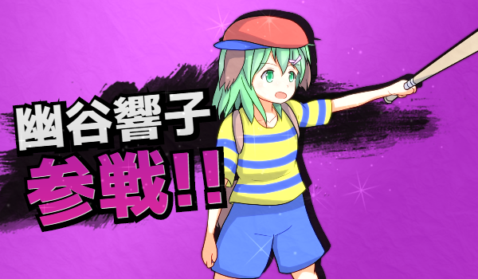

2015年7月
2015/07/31
-
午前5時、入稿。結局、おまけページの仕上げからぶっ続けて徹夜している。
金額が確定し次第、印刷所からメールが来るはずである。
ひとまず原稿作業は落ち着いたというところか。
2015年6月
2015/06/02
-
先人にできていたことを、のちの人物ができないとしたら、それはその工程がしっかり伝わっていないことを意味する。
-
大量の単純作業は人の手で行われるべきではない。
どうしても行わなければならない場合でも思考停止で行われるべきだし、そうできるべきである。
-
思考や記憶の代理はドキュメントである。
つまり、ドキュメントを書いている時、私は思考を捨てようとしている。
-
ドキュメントなんて堅苦しい領域に限定せずとも、こうして文章を吐き出している時もそうだ。
頭の中でグルグル巡って鬱陶しいこの思考を捨てている。
捨てなくちゃ、狭い脳みその中に新しい要素を置く場所がなくなってしまう。
-
人の目に触れるか否かは別にして、こうして頭の中のものを少しずつ捨てることで前進しているのだと気付いた。
今は仕事に時間を取られているが、そうでなかった学生時代に取り憑かれたように物を作り続けていたのはそういうことだったのか。
-
仕事に取り憑かれているからと言って、作る手を止めるとだんだん頭の中に古いものが溜まっていって膿んでいく。
このところ感じていた言いようのない苛立ちもそれが原因だ。
少しずつでも捨てるために動き続けないと、このままでは気が狂ってしまう。
-
まあ、何、その、夏の準備、進んでないね？
2015年5月
2015/05/10
- PO.SU.TAは普通に間に合った。専用品だけあって使いやすい。
-
ポスターはB2サイズにしたが、会場で見ると小さく見える。
次からはB1で良いだろう。
-
とにかく、例大祭が終わった。とても良い一日だった。
-
前日から何があったか、レポート漫画を描くほど筆が早くないのでここにまとめることにする。
-
前日夜。売り子のAuTo君と協力者のFelishia君とskype会議。
このところ例大祭とコミケに関してはこの3人で入念にサークルチェックをして巡回ルートを定めている。
例大祭に関しては、コミケのようにカタロムのありがたい機能がないので、うまいリストの作り方を研究する必要がある。
AuTo君がyaml形式でチェックリストを作っているのを見て、yamlパーサがあればHTMLに自動でまとめられるのではと思いついたのが数日前。
3人分のyamlをマージしてhtml出力するプログラムを修正し、最終リスト3人分を印刷した。
日付が変わる辺りに眠ろうと決意して布団に入るも、明日への不安で全く眠れず。
友人のbloodborne放送を見たりして結局眠ったのが2時半である。
-
当日朝。極度の睡眠不足の際に特有の、動悸に襲われる。
ご飯を食べれば多少良くなるだろうと考えて食事を取るも、今度は腹が下ってしまう。
それでもなんとか待ち合わせの時間までに出発できた。
-
設営道具が思ったより重い。というか、既刊36冊（vol1,vol2を18冊ずつ）は手搬入重い。
せめてコロコロ引けるキャリーバッグがあれば。
-
大崎駅で二人と合流し、Felishia君にリストを渡して会場へ。
サークル入場の時間を見計らった電車だったので、さして混雑しているわけでもなくスイスイ。
-
入場後、さっくり設営。
ひたすら不安だった印刷は問題なかったようで何よりである。
今回はポスターを持ち込んだが、それだけではさして時間がかからないことが判明した。
あと、やっぱりはさみを忘れてダンボール開けに苦戦。コミケでボールペンをぶっ壊したので、ハサミは必須アイテムである。
終了後に二人から聞くところによると、平積みだけよりも立体的にスペースを飾るべきとのことだった。
確かに、ご近所のえふえふえふさんなんかはラックを使って立体的に本を配置していた。
インド僧さんのスペースでも、見本を立てかける台座があったのでそれもあると良いかもしれない。
それから、テーブルクロスの端がほつれてしまっているので、切っておいたほうが良さそうである。
-
設営が終わってから会場までかなり時間があったが、その間他のサークルは忙しく設営している。
アイサツ回りに出るわけにも行かず、９時までのんびりする形に。
９時を少し回ったところで、分断前に123ホール側だけ行こうと決意して動き始める。
ご近所のえふえふえふさんにご挨拶。が、ご本人不在で、売り子さんと会話することに。
新刊の交換をしたのだが、その後もう一冊いただいてしまったことが発覚して申し訳ない気持ちになる。
去年の例大祭と夏の、イクさん本と針妙丸本がめちゃくちゃかわいかったことをお伝えした。
-
まず、日頃skypeやイベントの打ち上げでお世話になっているインド僧さんのスペースへ。
案の定設営中だが、手慣れたものでテンヤワンヤしている様子ではなかった。
新刊を交換し、売り子のたこ焼きさんにも新刊をお渡しする。
-
次は「めっっっっちゃかわいい」でお馴染み、トゥーミさんのスペースへ。
わ、若い……！
それから立て続けにチップさん、ナゴミバコさんのスペースへ。
ナゴミバコさんとは初対面だが、飴湯さんとは去年の例大祭で会っているので、その御縁で。
-
イクさんだけまだいなかったので、456ホールに戻って巡回。
月夜君不在。（後に、寝坊したのでタクシーでやってきたという話を聞くことになる）
ぬ島付近で「めっっっっちゃかわいい」の走るなポスターを発見。公式に採用されてしまうとは
スペースに戻ったところ落ち着いていたので、ご近所さんとのアイサツ、新刊交換を行う。
-
まず、左右の黄理さん、きせつさんと新刊を交換。
両人が仲の良い間柄であることは知っていたので、当日は肩身が狭いかと思っていたが……やっぱりちょっと狭かった。
チキンハートのおかげで会話に入れず、自分越しに会話が繰り広げられていてたまに相槌を打つくらいであった。
きせつさんは新刊をすごい量持ってきていて、しかもすごいペースではけていくものだからすごい。
スケブ依頼もあっという間に５～６冊溜まっていて打ち切ってしまっていた。
アナログからっきしな身からすれば、ただただ尊敬するばかりである。
本にサインを要求されていたが、気持ちはわかる気がする。きせつさんのサインはかっこいい。
きせつさんのスペースで売り子をされていたシロ９じらさんは、テンションが高くて面白い方だった。
さとりクラスタ（主におみなさん、トゥーミさん）と交流があるようで、トゥーミさんが若いという話で盛り上がる。
が、お二人も十分に若かった。
-
次に、響子ちゃん勢筆頭であるところの楓さん。
慣れない誕生日席、仲良しのお二人に囲まれてガチガチに緊張していた自分にとって、近くに楓さんがいてくれる安心感は大きかった。
話を聞くところによると、やっぱり楓さんはグッズ作成に手慣れすぎている。
でも可愛いんだなこれが。新刊コピ本シリーズ第１９弾（！）を交換していただいて、マグネットを購入。
終わり際にはシルエットシールを人数分頂いてしまった。
撤収作業中にポスターがほしいと言ってくださったのでお譲りした。
正直なところ、貰い手は現れないだろうと思ってその手の告知をしていなかったので、これはとても嬉しい誤算であった。
こいつだけ荷物の中でサイズがでかかった（トートバッグからはみ出る）ので、持ち帰りたくなかったのである。
（かと言ってこれだけ郵送するのも何だかシャクであった）
初めて作ったにしては綺麗で良いポスターだと思っているので、大事にしてくれる人に引き取ってもらえるのは本当に嬉しい。
余談だが、このところりりくるに特典ポスターがついてきて辛い。
確かに綺麗なのだけど、うちにポスターを飾る気はないのでちょっぴり困っている。
-
続いて、響子ちゃんサークルを回る。
おせんさん、かたぎりさん、ツナマヨさん、らくがきびよりさんのスペースにご挨拶へ。
かたぎりさんの命蓮寺絵日記は前からチェックしていて大好きなので、今回アイサツできて嬉しい。
ツナマヨさんはあまり響子ちゃん島で見かけることがなかったが、かなりの響子ちゃん好きらしい。
動画のみなぎるプリズムリバーから知って、童話合同の一寸響子も好き。
らくがきびよりさんはお二人で活動されているので、サークル名で呼ぶようにしているのだが、こちらのサークル名も覚えてくださっていたらしい（！）
-
会場前に、千葉耶さんに名刺の代金を払っておく。
今回の名刺は印刷が非常に綺麗で、名札として見栄えがよくなった。
あまり配る枚数自体は多くないので、今度作るときはもっと部数少なくても良いかも？
-
響子ちゃんサークルはもちろん、千葉耶さんもスペースが近かったのでアイサツ回りしやすかった。
卯月さんとは入れ違ってしまったようで、お会いできなかったのが残念である。
-
その後、会場前にAuTo君が買い物に動き始め、しばらく店番状態に。
劇毒少女はこのタイミングで動けなかったら危うかったそうである。ひええ。
たくさんの方が来てくださった。おかげで新刊完売である。既刊も残り僅かになった。
意外にも動画を見て来てくれる人がいた。
話の中で出てきたが、シハンターSの発想が生まれたのは完全に奇跡である。
友人マリオを古舘に実況させた動画を見て、真人とガッチリ咬み合ってしまうことに気付いてしまってからはトントン拍子だった。
いや、実際には音声ファイルの整理に１ヶ月かけたわけだが。
-
黄理さんのサークルの売り子さんがずんだ味のぷっちょを食べていて、それをシロ９じらさんに渡していた。
とにかくすごい味だったらしく、シロ９じらさんのテンションが上がりっぱなしであった。
……良い方向かどうかは置いといて、その後しばらくずんだという言葉が飛び交う両サークルに囲まれていた。
そういえば、茨歌仙で響子ちゃんがずんだもちの屋台をやっている。
（似たタイミングで出た輝針城のインストールメッセージにも出ていたし、ZUNの中でずんだ餅ブームだったのかもしれない）
夏コミの新刊のネタ、ずんだ餅で何かできないだろうか。ずんだずんだ
-
AuTo君らが帰ってきて落ち着いてから、アイサツ回りの続き。
寝坊タクシーの月夜君、実は同大学であることが判明した水深さん、それから響子ちゃん勢であるなまうにさん
以前からtwitterで相互フォローのげしょぷ先生、あすかりさん、あまこけさんのスペースへ。
なまうにさんとげしょぷさんは売り子だったようである。
前者はサークル主さん忙しそうだったのでそそくさと退散。後者はうまいこと売り込まれて新作を購入した。なんだかんだ楽しみである。
あまこけさんのスペースではバロンさんが売り子をされているので、そのご縁であまこけさんにもアイサツ。
なんと、あまこけさんに名前を覚えていただいていたらしい。光栄である。
青空を、かもめに乗って跳ぶ針妙丸のイラストを見て一目惚れし、それ以来彼のイラストをずっと楽しみにしている。
-
終わり際、さとりちゃん勢の打ち上げ前にきせつさんのスペース前に人が集まる。
その中におみなさんがいらっしゃったので、冬の本が良かったことをお伝えした。
もちろん、今回の新刊も入手済みである。
-
撤収作業中にFelishia君から「全裸合同」の名前を聞いたお陰で、全裸合同をもらいそこねていたことを思い出す。
冬コミに売り子をしておきながら、肝心の本をもらいそこねていたのである。
インド僧さんのスペースへ行き、軽く話していたらなたねさんのスペースに行きそこねていたことに気付く。
待てよ？ なたねさんも「つ」じゃなかったか……？
同じ島でした。なぜ気づかなかった！
去年の例大祭でも同じ島だったような気がする。
新刊が切れてしまっていたので、渡すことができず。あちらの新刊だけ頂いてしまう申し訳ない自体に。
-
実はインド僧さんに打ち上げに誘われていたが、体力的に厳しそうなのでお断りさせていただいた。
案の定、帰ってシャワーを浴びてこれを書いているタイミングで既に眠い。
アイサツに来て頂いた方も名刺や本を見れば思い出すはず。
とにかく、いろんな方とお話できて良い一日であった。
本を手にとってもらうだけでドキドキするし、買っていただけると本当に心の底から「ありがとうございます」が出てくる。
こりゃあ、同人がやめられなくなるわけである。
-
さあ、明日郵送で追加分が届く前に、今日のうちに持ち帰った戦利品を楽しもう。
2015年4月
2015/04/27
-
精神的に参る事態もあったが、今はなんとか落ち着いている。
ひとまず例大祭が終わるまでは考えないこととする。
-
例大祭用ポスターは入稿したのだが、ポスタースタンドをどうしようか迷っている。
迷った末、PO.SU.TAを注文してしまった。
が、納期が間に合うかどうかわからない。
間に合わなかった場合に備え、自作も視野に入れる必要があるだろう。
100均でパーツが揃うということだったが、ラックとポールが近場にない。
ズボン用ハンガーと伸縮する支柱、クリップはあった。
PO.SU.TAが間に合わなかった場合、ちょっと遠出して探す必要がある。
-
7日までに間に合わなかった場合、ねこのしっぽで会場で直接渡してもらえるプランに賭ける手もある。
-
7日まで待つ→100均で部品探す→なければねこしっぽ
という感じで良いだろう。
2015/04/01
-
新年度が始まったわけである。
ここまで何をしていたかというと、例大祭の原稿をしていた。
-
TFSPもToGfもしていたが。
-
さて、何から書くべきか。今、ひたすらに精神が動揺している。
おそらく、良い意味ではない。
抱えていた爆弾がとうとう破裂したと言っても、過言ではないだろう。
-
とにかく、こういう時に人に頼れない性格が呪わしい。
人に甘えるんじゃあないという教育の賜物である。クソッタレめ。
-
多分、一度くらい本音で罵ってやったほうが良いんだと思う。
それで自体が好転するとは思えないが、どちらの味方でもないことを表明する必要はある。
その上で、どういう方針で行動すべきか考えねばなるまい。
ただ、最後は二人のわがままのぶつかり合いなので、決定権は絶対に押し付けられないようにする。
-
行動方針が決定したところで、気持ちを切り替えよう。
【セイクリッド】を組みたい。
2015年1月
2015/01/31
-
闘会議１日目であった。いろいろと濃い一日だった。
-
まず、出発前に忘れ物や体調不良によって時間を食われる。やや遅刻。
-
平安京エイリアンが実機であった。PC8001が現存して動いているとは。
-
東方旧作は５作が１つのマシンに入っていた。
特に時間制限を設けていなかったので、列がひどいことになった。
-
古いものから新しいものまで、ここまで広い年代をカバーしたプレイアブル展示ブースは今までなかっただろう。
-
古いマシンをいじれる人が楽しげに話していたのが記憶に残る。
今のゲームは、少しでもわかりにくいところがあると低い評価を受ける。
けれど、当時のゲームは何もかも手探りだった。遊ぶ側も手探りで遊ぶだけの余裕があった。
今、若い子が古いマシンを触って手探りで遊び方を見つけているのを見ると、変わらないものもあるんだな、とのこと。
-
持ち込み相談所は、アドバイザーがZUNと中村光一。
これ、生放送なんでしなかったのかしら。というくらい豪華。
ZUNに持ち込んでいたのは、マウスホイールをコロコロしては死ぬ横スクロールアクション。
それと、Phantastic Tryno World
-
詳しい話は聞こえなかったが、終始和やかにアドバイスが行われていたように思う。
-
午後も自作ゲームブースをウロウロ。年表がすごい。
-
1600からセガブースで、世界樹と不思議のダンジョンのイベント。
アトラスとスパチュンの開発者同士がTAで対決していた。
実況の川原さんめっちゃいい声。この人となら一晩世界樹について語り明かせそう。
不思議のダンジョンらしいモンハウやら罠やらも殺しにかかってきていて、こりゃあやばい。
1000回遊べると銘打っているが、1000回で済むかどうかだ。
3/5だろ……例大祭どうすんだよ……
-
自作ゲームブースに戻ったら、アクアスタイルの人が中村光一にふしげん３を見せていた。
その様を後ろからZUNが眺めているという、なんだか歴史的な瞬間に立ち会った気がする。
その後、アクアスタイルの人にふしげんを楽しんでいるということを直接伝えられた。いい日だ。
2015/01/07
-
艦これアニメ、とうとう始まる。
気になる点はいくらかあったが、ファン向け作品としては上々なのでは
-
最も気になったのは「とりあえず原作のセリフ言わせとこう」なところ。
加賀さんとか響とか、無理に言わせなくても良かったのでは感が。
-
加賀さんの演技、ちょっと声低めになってる？
原作の「落ち着いた声」というよりは「キツめの声」になっているような。
-
あとは、一航戦の謎ポーズ。腰に手を当てるあれがどうも不自然に見えた。
謎の既視感があったが、STRさんのtweetによりそれが「あたりまえ体操」だったことに気付く。
-
司令官の扱いについては、完璧と言わざるを得ない。
艦娘に助言をするけど、実際には姿も声も登場しない。
すなわち、必要以上に出しゃばらず、かと言って存在感皆無なわけでもなく。
-
登場キャラのチョイスは、人気どころを集めた感じか。
金剛型、第六駆逐隊、一航戦二航戦、川内型、夕立、島風。
意外なところでは、翔鶴や球磨型、利根、大淀、最上、夕張が登場。
セリフなかったものの二航戦がいてくれたのは嬉しかった。
球磨、多摩の戦闘シーンも嬉しい。特に球磨は史実上目立った特徴がないので、出ない可能性も考えていただけに。
なお、球磨型では木曾だけ出ていない模様
-
しかし、瑞鶴がいない上にこの展開だと、一航戦沈む展開もあるのでは。
赤城さんのセリフが妙に死亡フラグに聞こえて恐ろしい。
開幕のナレーションも嫌にシリアスだったし。
-
大北に関しては、大井っちのキャラ付けが完全にサイコレズになったのを印象づける感じに。
その点で、提督ラブ派にとっては苦痛なワンシーンだったろうと思う。
百合派にとっては大歓喜であった。大坪さんが楽しそうで何よりです。
-
愛宕のぱんぱかぱーんも、原作よりちょっとトーン低めだったような。
-
妖精さんの謎アップはすごく好き。
-
出撃シーンはめちゃくちゃかっこよかった。
ぱっと見スト魔女っぽさもあったりして。
出撃前の雷電もすごく可愛かった。
2014年12月
2014/12/29
-
冬コミ２日目。東ト30b いんどの宮殿！にお手伝いとして参戦。
初のサークル入場がこういう形になるとは。
-
朝、インド僧さんからの遅刻連絡。
癖で早めの時間に出てしまい、国際展示場駅で４５分ほど時間を潰すことに。
世界樹が役に立つ。素晴らしい
-
インド僧さんとの待ち合わせでちょっと手間取る。0830頃に合流。
雨の中、早歩きで会場へ。サークル入場は0900までなので、急がねばならない。傘は結局差さなかった。
-
会場入り後は暖かい……かと思いきや、シャッター前の誕生日席である。寒い。
さすがのチルノ島であった。
-
なお、既刊の搬入数が多すぎてスペース的に広く占有しすぎ、周囲のサークルには迷惑をかけた模様。
それでもダンボールの開封を手伝って頂いたり、気さくに話しかけてくださって感謝してもしきれないです。
ましゃらさん、パキラさんありがとうございました。
-
作戦行動に出ることはついにできなかった。
サークル主のインド僧さんは会場を忙しく回っていたし、一人ではサークルスペースを見切れないのでたこやきさんとずっとスペースにいた気がする。
ファンネルを引き受けてくれたフェリシア君には無茶を頼んでしまった。
本来、半分くらいずつ二人で回るつもりのものを全部行かせてしまった。
（すなわち、想定の倍のサークル巡りをさせてしまった）
-
彼のお陰で、回るつもりだったサークルのものはほぼ手に入った。
粟米湯だけは新刊を逃してしまった。が、彼を責めることはできまい。
せめてシャッターは自分で行くつもりだったのだが、だったのだが！
twitterに異常が発生し、彼と連絡を取る手段が途絶えていたのも不安の一つであった。
今にして思えば、もう少し早い時間にtwitterが死んでいたらインド僧さんとの待ち合わせができず詰んでいたのか……。
-
寒さに凍えながら、周囲のサークルに申し訳なく思いながら、時折たこやきさんと交代しながら、ずっと売り子のターン。
フェリシア君はいつものようにパイの実を差し入れてくれた。食べるともれなく口の中ぱっさぱさやぞ！
インド僧さんが特に深く考えずパイの実を手に取ったので、「喉乾きますよ」と忠告。
結局口にしてしまわれたが、大丈夫だったのだろうか。
-
かく言う自分も、食ったり飲んだりする暇がなく、結局打ち上げまでほぼ飲まず食わずであった。
一応、フェリシア君との戦利品清算の際に一本満足を食ったが、それだけである。
その分、打ち上げでは開幕からペースを上げて食ってしまった。
-
新刊の全裸合同が900円。100円玉不安があったが、全裸合同の部数分は用意したというインド僧さん。
待って、悲恋合同は700円、合わせると1600円で、2000円出されると400円出て行くのよ……。
おとなりのサークルさんに「両替しますよ」と言っていただけた時は、救世主が現れたと思った。
-
肝心の出た数は、全裸合同単品がすごかった。新刊セットをもう少し目立たせるべきだったのかもしれない。
既刊の下克上は搬入分がすべて出たので、最後のほうには「すみません完売しました」と謝ることも。
もっとも、インド僧さんがずっとサークルスペースにいなかったので、「インド僧さんいますか？」に対して「すみません今出ちゃってます」と言う機会のほうが圧倒的に多かったが。
-
撤収作業ではデキる男（最年長）まささんのコミケ歴２０年パワーが炸裂。
手際の良さが圧倒的に違う。憧れる。
たこやきさんもガムテープスキルが高い。せめて売り子として活躍しておいてよかった。
-
例大祭の打ち上げと同じく、デキる男（最年長）のまささんと会話が弾む。
担当レイヤーはだいぶ違うが、エンジニア同士ということで結構話が合ったりする。
龍二さんも混じって、イベントの打ち上げなのにうまい飯うまい酒トークに花を咲かせた。
例大祭の時にほとんど話せなかったふうざささん、悪餓鬼さんとも話せたのは良かった。
ユーキさんとはあまり話せなかったが、それは次の機会に。
-
シンデンさん？（ふうざささんと一緒にいた方）とゲームとか同人ジャンルとかに対してクソ真面目トークを繰り広げる。
めっちゃ盛り上がったのに、お名前思い出せないごめんなさい。
あーくんに「クソ真面目だな君は」とか言われるノリだったのは間違いないが、よくついてきてくださったもんだ。
東方ジャンルと艦これジャンルとか、おとなりの国とか、ゲームの新しい楽しみ方の形とか。
結構、互いに考え方が近く感じたが、微妙な差異も感じたような気がする。でも酔っていたのでよくわからない。
よくわからないけど、充実した時間だったように感じる。素晴らしい
-
すごい満足度の高い飲み会だった。結構なお値段だったにもかかわらず、インド僧さんが全員分出されるとは……！
ゴチになります！
-
龍二さんは百合好きかつ九十九姉妹好きということで、次の例大祭が楽しみである。
悪餓鬼さんとお二人で話していた「作っていないと落ち着かない」という気持ちには、強い共感を覚えた。
自分の場合は、「作らない自分に価値はない」まで行くほどやや過激な思想でもあった。
夏/冬と落とされて、その辺りの気持ちにちょっと整理をつけようとインプット期間を設けているが、例大祭はそろそろ復活の時期かもしれない。
-
ダブルフォーカスと幻想人形演舞、生放送でやりたい。特に後者はドットの作り込みが半端ではない。
システム面がポケモンと同等かどうかがやや気になるところ。
最終的に対人戦を意識するものになるのはちょっと怖い。対人ゲーは得意ではないのだ。
しかし、選んだ子と一緒にストーリーを進められるらしいので、響子ちゃんと一緒に行くぞー！
2014/12/18
-
りりくる冬編も素晴らしい。
が、本当におまけシナリオ的扱いで、続編の期待はあまりないかも……。
来るのであればほしいけど、vol4～6にシフトしていくんだろうなあ。
2014/12/15
-
新世界樹２のサントラポチってしまった。初陣がかっこ良すぎる。
-
今日のワンドロは響子ちゃんである。
2014/12/13
-
昨日は新卒忘年会で騒ぎ過ぎた。
自分がえらい絡み酒であったことがわかる。
あっちゅう間に出来上がって周囲の連中に絡みまくってた。
2014/12/12
-
スキュレーと戦っていたら３時になっていた。
まだ３層ボスなのに、過去作の６層ボスクラスの戦いをしている。
徹底的にパターン化してあとは運任せ。おいおい、大丈夫かこれ
さすがは２のリメイクである。
2014/12/08
-
りりくるEX夏編を聞いた。
チョコリレーの辺りはちょっとアレだったが、リアルJKのノリと考えれば納得の範囲内。
りりくる本編が好きなら、オススメできる作品。
-
vol.4～6が出たが、1～3の彼女たちの作品は冬休みで打ち止めなのかなあ
-
インド僧さんにコミケ搬出要員として借り出されることに。
頑張ります。
2014/12/04
-
3-5削りきり。2-5も削りきってある。
マンスリーやらねえとなあ。
-
りりくるEXが届いた。
おまけにでかいポスターがついてきたが、これどうすんだ……。
確かに綺麗でかわいいのだが、家人の目を考えると貼っておけるもんじゃあないぞ
2014/12/01
-
苦しかった風邪もようやく治りつつある。
咳がまだ残ってはいるが、じきに完治するだろう。
-
風邪のせいで３日も有給を使ってしまった。
ともあれ、まだ冬休みをそれなりの期間取れるだけの余裕は残してある。
-
この時期は著名人の訃報が続く。
やはり、人間寒くなると死にやすいんだろう。
じい様の時も１１月だったような気がする。
-
著名人の死から連想してしまうのは、やはり永井一郎の死である。
「サザエさんなんか見なくなった癖に」という斜に構えた意見も多くtwitterに流れたことだろう。
事実、自分もサザエさんは見なくなっていた。だが、それ故に思うところがあった。
父がいなくなってから、日曜の夜にテレビを見なくなったような気がする。
家族全員で食卓を囲んで、まる子ちゃん、サザエさんを続けて見ていた記憶が強く残っている。
（こち亀、鉄腕DASH、バンキシャなんかも見ていた）
お父さんであるところの波平役の声優が亡くなったことで、もう一家で食卓を囲んだあの暖かい時間は戻ってこないのだと、改めて認識させられたわけだ。
じい様もこの時期に亡くなっていたこともあり、１０月１１月に著名人の訃報を聞くと永井一郎と、磯野波平と、父を思い出してしまうのである。
-
言葉にして書くのは初めてだが、こうして言葉にしておかなければ人間忘れてしまうもんである。
それは１０年以上創作という世界（と言うにはあまりにも狭い世界だったが）を自分なりに歩いてきてそう感じたことだ。
面白い話のネタが浮かんでも、思考を巡らせたり眠ったりするとどこかへ消えてしまう。
戻ってこない時間のことも、言葉に記しておけばまた思い返せる。
言葉にするのがまだ辛いことでもあったが、言葉にせず抱えているのもしんどいもんである。我ながら面倒な性格をしている。
-
なお、波平役が茶風林に交代した初回を見て、あまりの違和感の無さにすっかり安心して、翌週からまたサザエさんを見なくなったことも書いておくべきだろう。
-
艦これでは古鷹さんが改二になった。レベル98だったので余裕である。
ただし、第六戦隊任務が気にかかる。青葉必須とくれば、レベル99なので指輪を渡したい。
しかし、青葉と古鷹にはお互いに指輪を交換してほしい。百合脳のこだわりである。
ちょうどいい機会なので、古鷹さんを99まで上げきってしまおう。
-
もちろん、改造の近いオイゲンのレベルも上げておきたい。
朝雲もとりあえず改造までは、という感じである。
-
Z3を取り戻すためにZ1旗艦でレア駆逐レシピを回し続けているが、あれから雪風が３隻できている。
-
古鷹さんの絵柄は頭身が高くなったように感じる。
新ボイスに青葉がたくさん出てきて幸せである。
大坪さんにしては素直なキャラクターに見えるが、きっと彼女は内側にえらいものを抱えているはずだ。
デビュー作の歳納京子然り、りりくるのイブ然り、艦これでは大北然りと、一癖あるキャラクターがとても良く似合う声である。
-
そういえば、りりくるで意外にもvol3の人気があることを知った。
彼女らは３作の中ではいわゆる「イロモノ」枠であって、ストレート、カーブと来た後のナックルのような存在である。
ここまで書いて、そういう傾向のものに惹かれやすいタイプの人たちが少なくないことを思い出した。
（かくいう自分も、イロモノ枠はかなり好きな部類である）
その花がわかる人であれば、玲緒麻衣に近いと言えば伝わるだろう。
-
玲緒麻衣は、初回こそ王道な感じに見えたものの、商業化して他のキャラとの絡みが増えた際に立ち位置がはっきりした。
玲緒っぽいらじおで中の人が「イロモノ枠！？」と驚いていたが、玲緒があれなので周囲から見ると超イロモノである。
というか、麻衣のほうがアレかもしれない。
あーちゃんと玲緒はキャラ付けと声の演技が似ているが、麻衣とイブはアレさが共通である。
アレな二人の声を聞いていると、こっちまで幸せな気分になってくるので危険である。
-
togetterでりりくるの感想まとめを見たが、なるほど、確かにあれは危険物である。
つぶやいている人すべてが脳髄どろり系のことしか言っていないので、初心者は入りにくいかもしれない。
内容としては、十分に百合初心者向けであると言える。
なかなか「これが百合だよ」と言うのは難しいが、この作品については太鼓判を押せるレベルだ。
個人的にはvol2が大好物である。姉妹百合、たまらん。
今伸びている内田真礼（有名ドコロでは、ごちうさのシャロ役）の声も良い。
-
古鷹さん放置ボイスかわいい。
百合勢向けではないところが、運営さんの学習だろうか。
（あんまり百合勢向けをプッシュし過ぎると、それはそれで反発が辛いものである）
-
りりくるなり艦これなりの百合については、一度時間を取ってえいやと書きまくりたい。
とにかく、大好きなことについては語らずにいられないのがオタクの性である。
自分の考えが強すぎて他の考えを聞いた時にもどかしくなるのもそうだ。
百合の中にも様々な派閥というか思想が存在し、一筋縄ではいかない世界だと強く感じている。
-
なお、当鎮守府の提督は女性である。
それを友人に伝えたところ「徹底してるなあ」と言われた。
男である以上、百合の世界からは徹底して自分を排除するもんである。
男性の存在を許さないわけではないが、自分はどこか雲の上から眺めているだけの存在でありたい。
-
こういう考え方を昔どこかで見たなと思い出してみると、それは腐女子の方々によく見られた思想であることに気付く。
「電柱になりたい」など、決して気に留められない存在として同性愛を眺めていたい、という思想だ。
ネットスラングが少し遅れて腐女子界隈で使われる事例はよく目にしたものだが、思想的には彼女らのほうがずっと進んでいたのである。
-
新世界樹の迷宮２を始めた。
少し前に届いてはいたのだが、風邪のせいで開封できていなかったのだ。
主人公の公式名はどうやら明かされていないようなので、ドレイクと名付ける。
ファフニール→竜→ドレイクという流れである。
しかし、ファフニールなんて縁起でもない称号をよくも騎士に与えるもんだ。
-
難易度はもちろんEXPART。これまでの全シリーズ踏破は伊達ではない。
今作でもアイテム使用、縛っていくか。
-
OPのアリアンナがめっちゃかわいい。
種田梨沙の声も素晴らしい。
2014年11月
2014/11/28
-
分厚いトレーナーだからと、胸部にカイロを貼り付けた。
ダメだ。これは火傷する。
プリント部分と反応したのか知らないが、朝方に急激に加熱。
思わずトレーナーを脱ぎ捨てる事態になった。
-
便秘から来る腹痛が重なる。辛い。
下から出るはずだったガスが上から出てきた。
でも、吐き出したらちょっとだけ楽になった。
咳も割れてきたような気がする。改善は、してる？
-
下った。便秘で苦しんだ後にゆるゆるになるの辛い。
-
寝て起きて夕方。寝起きはかなり調子が悪い。
風邪が治らぬうちに世界樹が届いてしまう。
治ったら開けよう。
でも、頭を使わないと腐りそうなのでTF6は進める。
2014/11/27
-
統計DBの中の人にツイート見られてるんだろうか。
項目別のソート機能が追加されていた。
ただし、JSON形式ではデータが取れないらしい。
-
パブロンゴールドの苦味を感じるたび、風邪など引くものかと決意を新たにする。
-
やはり体調が重いのでお休み。
外部の人と会う予定もあったが、この体調で行ってはいけない。
2014/11/26
-
風邪が重いのでお休みをいただくことにした。
-
routes_reverseRouting.scalaやroutes_routing.scalaがエンコーディング的に問題になる。
routesに日本語（マルチバイト文字を含む）コメントを書くとそうなってしまうようだ。
参考：2.3.0 won't support the UTF-8 characters in routes
-
ともあれ、建造についてもスクレイピングできるようになった。
Z3、待っててくれよ。
-
引き継ぎのためにTF6を買ってしまった。UMDパスポートは面倒なので無し。
-
モンハン、更新来ていたのか。
本日来たようだ。不正ギルクエの対策らしい。
前作でも同じことをしていたが、最初から対策はできなかったもんだろうか。
-
ワンドロ響子ちゃんである。いつもより間隔が少し長かった。
次は１２月の中旬から下旬辺りに来るだろう。
1時間26分で風邪引き響子ちゃんを描く。
粗はたくさん見つかるが、その辺を受け入れて完成させることのほうが大事だ。
途中で粗が見つかっても諦めないこと。それを意識したほうが、気持ちは楽になりそうだ。
2014/11/25
-
風邪の症状が思った以上に重い。
パブロンを飲んでゆっくり眠ろう。
Z3の轟沈も重なって、気分がすごい沈んでる。
-
スクレイピングプログラム、建造のほうもやろうと思い立ち、API整備。
DBのCRUD部分は書けたが、スクレイピング部分がまだだ。
と思っている矢先に、統計DBがまた落ちた。最近イベントのせいか不安定だ。
-
りりくるEX、夏休み編冬休み編両方ポチってしまった。
無印の感想もしっかり書いておきたいところ。
-
世界樹もポチった。なんだかんだ、楽しみである。
-
ユースティア、アイリスおまけシナリオを見た。
彼女もリサと同じく魅力的に描かれているが、ボリュームがちょっともったいない。
これが終わったところで、クローディアのものと思われるおまけシナリオが解放。
すべてのおまけシナリオを見れる状態になった。
2014/11/24
-
一昨日から風邪のような症状が出ていたが、とうとう喉がやられた。
-
ちょっと日数が空いてしまったが30秒ドローイングをしておこう。
と思ったら、また落ちている。ポーズマニアックス、不安定？
-
うげっ、お絵かきしながら艦これしてたらZ3沈んだ。93だったのに……。
Z1旗艦にしてレア駆逐回さなきゃ……。
主要艦の轟沈はこれが初。ついにやらかしたか……。
2014/11/23
-
５時間かけて朝雲を掘る。
雪風夕立＋支援射撃は正義であった。
-
スクレイピングしてソートして表示するところまでできた。
もう自分で使う範囲内では問題ないだろう。
-
サモナイ２は９話まで。ユエルの人間不信キャラはテンプレだけどすごく良い。
レナードのおっさんが好みなので使ってみたい。
2014/11/22
-
昨日はE-4突破とデイリーで４時過ぎまで起きていた。
-
髪が伸びてきたので切りにいこう。
-
スクレイピングプログラムを進める。
各装備ページのスクレイピングコードを書いた。
あとは、coffeeで描画するところか。
その前にcoffeescriptをeclipseで使うプラグインを調べよう。
2014/11/21
-
7時半頃起床。6時間+2時間程度寝たことになる。すっきりだ。
-
ユースティア、リサのおまけシナリオを見た。
サブヒロインながら彼女がすごく魅力的に描かれている。素晴らしい。
オチの1文も好き。
2014/11/20
-
変な時間に目覚めたので、艦これイベント。
E-2を無事に削りきり、E-3へ。
こちらはE-2よりすんなり。ラストダンス直前であきつドロップ。
これは運命である、と言わんばかりにあきつレベリング開始。
改造したらラストダンス挑んでみよう。
-
げえ、ポーズマニアックス落ちてる。30秒ドローイングで使ってたのになあ。
-
統計DBスクレイピング、こちら側のDB設計をなんとなく仕上げる。
JSON化用のクラスは別にわけておいたほうが良さそうだ。
TableQueryでエラーが出てる。いったい何事だろう。
-
帰宅してから２時間ほど眠った。これで生活リズムを取り戻したい。
-
30秒ドローイングは可もなく不可もなく。
強いていうなら、画面に収めることを意識し始めると多少うまくいくことがわかったくらいか。
2014/11/19
-
7時半起き。寝た時間を考えると辛い。
昼間、辛いだろうなあ……。
-
30秒ドローイング。さぼりがちになるとすぐに習慣が消えるので早めに取り戻す。
-
スクレイピングプログラムはいよいよ架橋へ。
DB周り触るのつらいけどがんばろう。
-
あぁ……変な時間に寝たら2時45分に目覚めた……。
2014/11/18
-
ExecutionContextがどうのと言われる。
やはり、この辺はもう少しよく設計しなければならないか。
/equipにアクセスした際にjsで/equip/:typeにアクセスさせ、戻り値を使おう。
-
げえ、スクレイピングプログラムをムキになって動かそうとして3時。
-
とりあえず、coffeescriptの落とし穴に引っかかりながら装備一覧表示ができた。
後は、それぞれのページで確率表示だ。
2014/11/17
- ７時半起床。だいたい７時間寝た。
- 朝、余裕があったので今日の分の３０秒ドローイング。
やっぱり、朝にやるほうが調子が良い気がする。
目覚ましにもなるし。
-
人体の立体構造を理解できるかどうかが、３０秒ドローイングの結果に直結している。
ぱっと見どんな体勢なのかわからないと全く描けない。
後は、立体構造に応じた線の引き方を知っているか否か。
-
会社の同期とその大学時代の友人と狩りへ。
一人ガチ勢がいて、すげえ早い。
-
艦これ統計DBがよく落ちる。イベントのせいか？
2014/11/16
-
艦これイベントはE-1をクリア。
E-2に行くところだ。
-
統計DBスクレイピングを始めたが、統計DBが落ちてしまった。
-
3日ほど30秒ドローイングが空いてしまった。
全く見えない。というか、30秒で描こうとする場合、構造は頭の中に入っているべきなんだろうか。
そっちのトレーニングからやらないと全く描ける気がしない。
-
サモナイは８話まで進んだ。
道場のあれつらすぎる……。
ネスがかなり強くなってきている。
2014/11/15
-
艦これのイベントが始まったので、艦これページを整理。
E1ラストダンスまで行った。
-
統計DB、常々見づらいと思っていたので、スクレイピング用のコードを書き始める。
ついでにブラウザ上でよろしく表示したいので、play frameworkでやってみよう。
きれいなJSONの形で吐けるようにしてgithubで公開しても良いのかもしれない
-
装備タイプも含めてスクレイピング対象としなければならなそうだ。
KancolleItemメンバに装備タイプに関する値を入れよう。
-
h2DBをインメモリで展開する方法も調べたい。
テンプレから生成した時にくっついてきたsormが、scala2.11では動かなそうだ。
参考：Play Framework 2.3 (Scala)を使ったWebシステム開発入門
2014/11/13
- やらかした。
蓄積された睡眠不足と食い過ぎで横になったら、3時45分である。
確か横になったのは10時前くらいだから、6時間程度寝たことになる。
-
エリスおまけシナリオを見た。ほのぼのしている。
カイムさんすっかり丸くなってしまわれて。
-
とりあえずこの日の分の３０秒ドローイングを翌朝に。
眠くてロクに見えん
2014/11/12
- カイムの覚醒はちょっとよくわからない終わり方をした。
エロシーンカットならしかたがないのか？
-
やっぱりモンハンが盛り上がって1時40分である。つらい。
-
30秒ドローイングは昨日より調子が良さそうだ。
しかし、筋肉の構造を線でどう表現すべきか理解していないと効率は出なさそうである。
一度、30秒にとらわれずじっくりと模写してみる練習もしたい。
2014/11/11
- ８時間も寝た。幸福である。
-
久々にユースティア。ティアの初仕事がすごく幸せそう。
本編の結末知ってると幸せでも悲しくなってくる。
メルトもしっかりいたし。
-
モンハンに誘われて夜更かししてしまった。
1時半である。
-
30秒ドローイングは眠い状態でやると良くない。
2014/11/10
-
どうも昨日のtweetを見る限り、レシィを選ぶのは茨の道らしい。
-
朝から何だか下っている。昨日のスーパーカップチーズケーキ味がいけなかったのか？
-
新卒LTに加わっていたら帰りが遅くなった。
聞いてる分には楽しいのだが、帰りが遅くなると寝る時間も遅くなりがちで困る。
-
社内IRCで絵の練習の話になった。
そういえばと思い出し、30秒ドローイング。
以前やっていた時に比べて、見える線の量は増えた気がする。描けるとは言っていない。
いつ頃やめたんだったかと思い出すと、ちょうど去年の１１月１１日だった。
あの頃はやまびこえんまくvol1の原稿が終わったとかその辺りだったような。
今日からまた、１日５分続けてみよう。
2014/11/09
-
サモナイ２を開始した。
パートナーはレシィと悩んだ末にハサハに。保護被保護百合が熱い。
４話でユエルが出てきたところまで進んだ。
本編でレシユエの絡みってあるんだろうか。だとすると、レシィ選んで２周目という選択も悪くない？
ころをさんがレシユエ推しなので結構気になっている。
-
結局、６時間枠の後も少し枠を取って進めた。
４話の戦闘は魅了がキツかったが、異常回復の召喚を取っておいて正解だった。
-
携帯の充電器が断線したので買い替えた。出費が多いな。
-
ちょうど12時頃。寝よう。ここのところモンハンで夜更かししがちだった。
2014/11/08
-
サモナイ１をクリアした。長かった……。
最後のキマシっぷりは美味しかった。
-
３時までモンハンしてしまう。つらい。
でも、ダオラ＝ゲンム作れた。チェルノボグ装備もできた。
対グラビ装備のため、双逆鱗を狙わねば。
-
数字パズル問題を渡された。
ある４桁の数字が正解だが、５通りの特定法則にしたがって間違った間違いが提示されている。
５通りの間違いはすべて、正解に含まれる数字を２つ含み、なおかつその数字の桁が正解と一致しない。
間違いは6087,5173,1358,3825,2531の５つ。
-
なるほど、正解の４桁の数字を桁ごとにX1, X2, X3, X4としよう。
間違いの４桁をそれぞれA*,B*,C*,D*,E*（*は1～4）とする。
X1には、Y1（YはA～E）以外の数字で、なおかつ間違いに含まれるような数字が入る。
つまり、6,5,1,3,2はX1になり得ないし、9もX1にはなり得ない。0, 7, 8のいずれかである。
同様にして考えると、X*であるような可能性のある数字は以下のようになる。
| X1 |
0, 7, 8 |
| X2 |
2, 6, 7 |
| X3 |
0, 1, 6 |
| X4 |
0, 2 |
-
ここで、3,5が正解の可能性にすら含まれていないことに注目する。
間違いB,C,D,Eにはいずれも3と5が含まれているので、それ以外の２つの数字が正解に必ず含まれる。
したがって、1,2,7,8が必ず正解に含まれる。ここで、X3 = 1, X4 = 2が確定する。
-
４つの数字が必ず正解に含まれるため、X1～X4において数字の重複は許されない。
したがって、X2 = 7, X1 = 8である。正解は8712となる。
2014/11/07
-
ユースティアのおまけシナリオ、楽園幻想を見た。
せつなすぎるでしょう……。
2014/11/06
- そういえば昨日、例大祭の申し込みが始まった。
１月までなのでまだ焦る時間ではないが、vol3のめどがつくまで申し込みは控えよう。
-
G誰おマガラ強化版に手こずって１時４９分。
二人がかりであれだけ時間がかかるとなると、相当体力あるぞ。
-
ネーム直しは進まず。
2014/11/05
-
モンハンは少しずつ進める。クシャの剛角あと１本に、古竜の大宝玉１個か。
-
ユースティアはとりあえずエンディングをコンプ。
あとはおまけシナリオを見ていけば、トロフィーコンプか。
ラヴィとコレットの二人組はすごく良い。
百合の香りはこういうゲームでは無粋なもんだが、それ抜きにしても柵から解放された二人は本当に幸せになってほしい。
-
10ページ途中までネームを直した。
全体的にコマが大きすぎるので、少し小さくしてコマ数を増やすようにするとそれっぽくなりそうだ。
もちろん、見せるべき大コマはできるだけ据え置きたい。
- 1-5削り終わった。
2014/11/04
- コミケから封筒が届いた。落選したからお金が返ってくるのか。
-
ユースティアはフィオナEDを見た。まあ、確かにこの時点では問題解決しているようだが……。
ほんとに、平和に終わってくれるなら何よりだが、ティアEDを見た以上やっぱりすっきりしない。
攻略順を間違えた。我慢してハズレの選択肢から埋めていくべきだったか。
-
せっかくコミケに落ちたので、やまびこえんまくvol3のネームから直していきたい。
コマ割において、コマの数に注目して研究してみる。
１ページに４コマだけというのは多用されるべきではなさそうだ。
-
とりあえず５ページ目だけなんとかした。
やっぱり、コマ割をしっかり書き込むとそれらしくなる。
明日からこの調子で少しずつ直していこう。
目標は例大祭だ。
2014/11/03
- ほとんどモンハンをせずに過ごした。
- 3-5消化完了。ウィークリーもろ号と演習以外片付けた。
-
ユースティアEDを見てしまった。長かったが、読み進めるのが止まらなかった。
すごい喪失感がある。あれでカイムさんがあっさり納得してしまうのがもやもやする。
でも、そういうところも含めて、名作だった。理不尽に抗おうとする人間の美しさが丁寧に描かれていた。
ラストはもどかしさが強く残るが、心に残る名作とはそういう作品のことを言うのだと思う。
スカッとするハッピーエンドはとても好きだが、心に深く痕を刻むのも、名作のあり方の一つだ。
-
ティアルートがトゥルーなのは良いとして、他EDだとやっぱりすっきりしない終わり方なんだろうか。
エリスだけ見たが、平和に終わりつつも根本的に問題が投げ出されていてうーむ。
-
あと心残りはメルト。エンディングもそうだけど、喪失感が容赦なく心をえぐってくるいい作品だった。
シナリオの構成も、一つのテーマを貫いていてとても綺麗だったように思う。
-
サブキャラが魅力的すぎて本当にもったいない。
システィナは特に、あれだけ本編で可愛かったのに最後があっけなさ過ぎて。
-
良い作品に触れると、創作意欲が湧くものである。
一次創作のメモ、久々に書いてみようかな。
2014/11/02
-
この間、巻取り式イヤホンが断線したので同じタイプのものを買い直す。
JVC 密閉型オンイヤーヘッドホン 耳掛け式 ブラック HP-AL302-B
そこそこのお値段だが、巻取り式がかなり使いやすい。
１年程度で断線したが、根本の部分さえ気をつければもっと長く使えると思う。
とりあえず、３DSにつないだままかばんにぶち込むのはよくなさそうだ。
-
勲章がいくらか手に入ったので、扶桑を改二にした。
瑞雲12型がかなり強い。あと、４スロ目の搭載数がおかしい。
-
GT4のサントラがすごく良い。
Moon Over The Castle目当てだったが、Break Downもかっこいいじゃん。
おっほ、Get Closerも良い。
Green Monsterか。もしブロンティーズを作るなら、パルスィ決闘時に流したいかも。
2014/11/01
-
冬コミ落ちた。
-
マンスリー復活である。忙しい。
-
とりあえず2-5を削りきり、マンスリーを全部片付けた。
今月は6-1が思いの外スイスイ行って助かった。
2014年10月
2014/10/31
-
金曜日なのに、まだ木曜日かと思ってしまった。
仕事に曜日感覚を殺されている。
-
朝から鼻血を出してぐったりする。
2014/10/30
-
下書き準備は16pまで。
-
Lazy君とG級ご苦労へ。本当にイラッとする性能になってやがる。
とは言え、２～３回で慣れて１０分針くらいで討伐できるように。
昏玉、G級でお前が出ても仕方ないんだ。
彼は無事に天玉を手に入れたようで何よりである。
-
モンハンが盛り上がって１時になってしまう。ここのところこの生活リズム良くない。
2014/10/29
-
響子ちゃんワンドロだったが、ワンドロの時間内に仕上げる元気がなかった。
結局２時間近くかけて完成させた。RTふぁぼは結構もらえてびっくり。嬉しい。
-
インド僧さんにさぎょいぷに誘われ、１時まで頑張る。下書き準備を15pまで進める。
2014/10/28
-
下書き準備進まず。
-
明日響子ちゃんワンドロだ。がんばろう。
2014/10/27
-
vitaTV用に穢翼のユースティアを買ってしまった。
やっぱりべっかんこうさんの絵はとても良い。
この絵柄でこのダークな世界観をやってくれるのは、８月にしては珍しい？
-
のめり込み過ぎて夜更かししがちになるのは辛い。
-
下書き準備は進まず。スケジュールが本当に無理だ。
-
モンハンもあまりやる気が出ず。ううん……。
-
勇者部がまさかのダークホース。これは面白いぞ
-
下書き準備14p途中まで。
2014/10/23
- もう木曜か。と思うと同時に、今日明日のスケジュールがつらい。
-
1900 - 2000までミーティングである。遅い時間に入れやがって。仕方ないけど
-
昨日夜更かしした分、少し寝坊した。６時間半くらい睡眠時間を確保できれば上等か。
2014/10/22
-
また足が攣った。すぐ痛みは引いたが、これまじでやばいのでは
-
夢の中で鼻血を出した。起きて少しして鼻を噛んだら本当に出た。
-
11p途中まで準備が進む。
-
腹の調子がおかしい。大丈夫だろうか。
出そうで出ないパターンだ。つらい。
-
0119になってしまった。眠ろう。
2014/10/21
-
またしても足が攣った。Iselixが癖になると言っていたが、なるほど、やばい。
気温が下がっているからなりやすいとか、あるんだろうか。
今回のは軽度の攣り方だった。
-
そういえば昨日、SDカードが届いた。VitaTV待ちである。
当然、それまでにサモナイ１，２が終わるはずもないので、しばらく放置だが。
-
下っている。昨日の昼のベーコンと夜の餃子とウィンナーだろうか。
-
下書き準備は7p途中まで終わった。ペースが遅すぎる。
-
0055。ちょっと遅くなった。しっかり眠ろう。
2014/10/20
-
朝起きたら息苦しかった。布団の重みなんだろうか……？
-
下書き準備は5pまで終わっている。このペースでは到底間に合わない。
-
0019。眠ろう。
2014/10/19
-
下書き準備がまだ終わらない。
スケジュール見直しにより、２週間下書きの猶予ができる。
しかし、２週間で終わるのか……？
2014/10/16
-
布団をかぶりすぎた。圧迫感で起きた後苦しくなった。
暑くて布団を全部はねのけたり、目が覚めたりもした。
さすがに、まだ毛布はいらない気がする。
-
モンハンに夢中でちょっと遅い時間になってしまった。
- 下書き準備で画像書き出しをしまくる。これを明日くらいに終わらせたい。
2014/10/15
- 足が攣って朝起きてしまった。畜生。
- でも、昼寝が効果アリとわかった。
- 下書き準備がひと通り最後まで行った。
-
さて、日付変更前に眠ってしまおうか。
2014/10/14
- 久々に下書き準備を進める。
後はおまけページのみか。
2014/10/13
- 案の定、モンハンにハマってやばい。
-
頑シミュが来るまで、前回のCSVに追加して考える。
-
1-5削り終わってた。
-
LTの絵がまだラフ状態。今日中に仕上げないとなあ。
-
久々の大和チャレンジ。開発資材が腐っているので100ぶっこむも、扶桑姉様
-
とりあえず月曜なのをいいことにウィークリーを進めてろ号と演習のみ残す。
-
モンハンにハマって絵が遅れ、寝る時間も遅れる。台風が仕事すりゃなあ。
-
猫吊るしの絵を完成させてbitbucketへ。明日完成させないとあれなんだよなあ。
2014/10/10
- 3-5任務がまさかの追加。結構辛いが、雷３で突っ切る。
- 明日はモンハンだ。ついでに服と携帯。
- サモナイに手を出したい。
- LTの絵描こう。
2014/10/07
- 今月分の3-5削りきり。エグい。ラストは上ルートもアリだ。
-
ピクトロジカが壊れたので再インストールしたらデータとの関連付けが消えた。
もう、機種変えだ。それまでやらん。
2014/10/06
- 2-5今月分削りきり。勲章が４つになったのでビスマルクをドライに。
- りりくるをループして百合分がえらい勢いで補充されていく。大当たりだわ。
- 下書き準備を粛々と進めていく。今週末には本格的に下書きに入りたい。
- でも、モンハン出ちまうんだよなあ……。
- 1-5がさっぱり削れていない。
2014/10/04
- 6-1任務がゲロい。空雷軽編成でも対して変わらないかも
- 6-1を意識しすぎて、演習任務を受け忘れた。不覚だ。
- りりくるが届いた。代引きにした覚えはないんだが……うーむ。
- ネームも少し進んだ。休み中に仕上げておきたいものだが。
2014/10/02
-
不在通知でりりくるが戻っていった。畜生。
土曜午前に再配達をお願いした。
-
ネームは調子が出なさそうなのと、疲れがたまっているようなので進まず。
2014/10/01
- りりくるが発送された。楽しみである。
- saifonで文字入れをして、加工して表紙完成。
- と思いきや、これ小傘ちゃん切れたりしねえだろうな……？
-
２ページネームした。週末一気に頑張りたい。
2014年9月
2014/09/30
- らきすた一挙を最後まで見てしまった。３時半である。
-
ここのところ残業続きなので、明日は早めに帰りたい。
-
りりくるがまだ発送されていなくて辛い。
-
冬コミ１冊目の表紙がだいたい完成。
と思ったが、文字入れする前に仕上げてしまった。
文字入れしてから仕上げ効果を入れなおしだな。
-
明日saifonで文字入れして加工しつつ、表紙の仕上げか。
-
ワンドロ響子ちゃんだった。１０分程度オーバーしたが、そこそこ満足が行った。

2014/09/29
- ついにプライベートメモを作成してしまった。
-
ゲーム以外のページを作成。ゲームは必要に応じて。
-
まずは艦これに関してだろうか。
ポータルページにする予定なので、wiki、提督業、統計DBへのリンクはほしい。
-
ニコニコに関しては、旧リストから適宜移植する感じだろう。
-
同人ページは、万が一の公開を考えてあらすじは書かないで置くほうが良さそうだ。
その辺りのメモは既存のテキストファイルを参照することとする。
-
百合に関しては、特定作品の百合について書いておきたい。
その花、東方、艦これなど。
りりくるも聞き次第、感想を書きたいところだ。
-
どこからが百合か？ についても真剣に論じておきたい。
例えば、「ゆるゆりは百合作品であるか否か」は議論を呼ぶだろう。